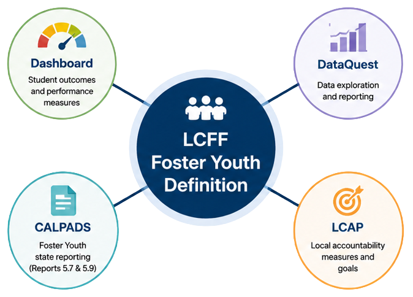

LCFF Foster Youth
For school funding, accountability, and LCFF reporting, California uses a specific Foster Youth definition.
Students generally qualify if:
- WIC 300 Petition / Placement
- WIC 300 Family Maintenance
- WIC 602 Placement
- Voluntary Placement Agreement (VPA)
- Nonminor Dependents
Key Takeaway
These categories determine who may be identified as Foster Youth for LCFF reporting purposes. The next page explores each category in more detail.
One Definition. Many Systems.
